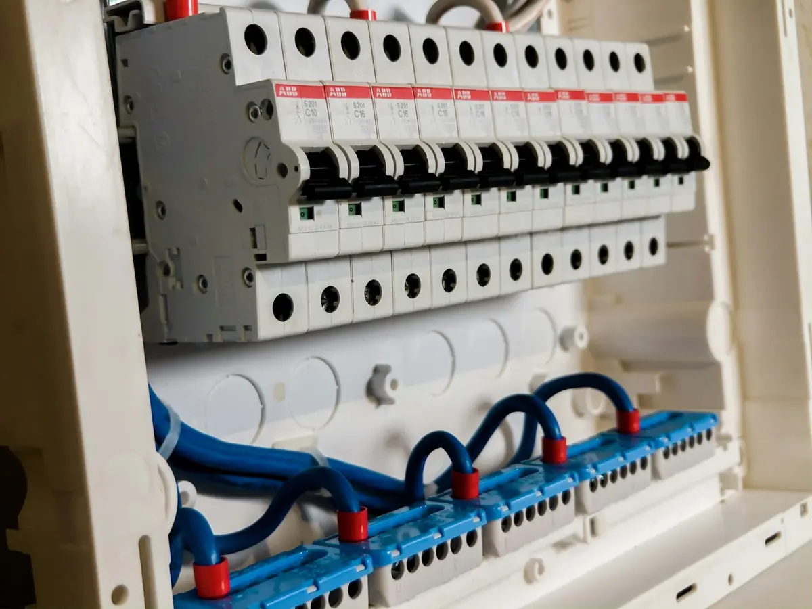

Vaste thuisbatterij
- 5 tot 20 kWh, uit te breiden per module
- Eigen groep, geplaatst door de installateur
- Genoeg vermogen voor het hele huis
- Mogelijk met noodstroomfunctie
Home / Thuisbatterijen
Vast geplaatst of plug & play, met of zonder zonnepanelen. U ziet direct hoeveel kWh past, wat het ongeveer oplevert en wanneer u het terugverdient.
Vier stappen. De uitkomst rekent bij elke wijziging mee.
| Soort | Capaciteit | Richtprijs | Per jaar | Terug in |
|---|
Zonnepanelen leveren het meest als u het minst verbruikt: midden op de dag. Zonder batterij gebruikt een gemiddeld huishouden daardoor ongeveer een derde van de eigen opwek direct. De rest gaat het net op.
Een batterij schuift dat overschot door naar de avond en nacht. De configurator schat hoeveel kWh u daarmee extra zelf gebruikt en zet die tegen uw stroomprijs. Daarvan gaat af wat u anders voor terugleveren had gekregen.
Heeft u een dynamisch contract, dan telt ook mee dat de batterij laadt op goedkope uren en levert op dure. Zonder zonnepanelen is dat de enige opbrengst.
Wat een thuisbatterij oplevert, verschilt per woning. Wij beloven daarom geen vaste besparing: de configurator geeft een indicatie, de offerte volgt na een blik op uw installatie.

Twee manieren om stroom op te slaan. Welke past, hangt af van uw verbruik en uw woning.
Scroll verder en het model schuift open.
Een batterij slaat gelijkstroom op, uw huis gebruikt wisselstroom. De omvormer zet het om, in beide richtingen.
De capaciteit groeit per module. Daardoor past een batterij bij uw verbruik van nu, en kunt u bij veel systemen later uitbreiden.
Een meter in de meterkast ziet of u stroom teruglevert of afneemt. Bij overschot laadt de batterij, bij vraag levert hij.
U rekent uw situatie door en stuurt de uitkomst mee met uw aanvraag.
Wij kijken naar uw zonnepanelen, omvormer, meterkast en de plek voor de batterij.
Dezelfde vakman installeert de batterij, stelt hem in en legt uit hoe u de opbrengst volgt.
Een plug & play batterij, ook wel stekkerbatterij, sluit u aan op een gewoon stopcontact. Een meter op uw slimme meter vertelt de batterij wanneer hij moet laden of leveren. De meeste modellen leveren maximaal 800 watt en hebben een capaciteit van ongeveer 1,5 tot 5 kWh. Dat is genoeg voor het basisverbruik in huis, niet voor een kookplaat of laadpaal.
Alleen met een dynamisch contract. De batterij laadt dan op uren waarop stroom goedkoop is en levert op dure uren. Met een vast of variabel contract betaalt u elk uur dezelfde prijs en valt er niets te verdienen. De configurator rekent dit voor u door.
Dat hangt af van uw stroomverbruik in de avond en nacht en van wat uw zonnepanelen overdag overhouden. Voor veel huishoudens met zonnepanelen komt de berekening uit tussen 5 en 10 kWh. Een grotere batterij slaat meer op, maar staat in de winter vaker leeg en verdient zich daardoor langzamer terug.
Die verschilt sterk per woning. Ze hangt af van uw verbruik, het aantal zonnepanelen, uw stroomprijs, de vergoeding voor terugleveren en de aanschafprijs. De configurator op deze pagina rekent het door met uw eigen gegevens en laat de aannames zien.
Op 1 januari 2027 stopt de salderingsregeling. Teruggeleverde stroom wordt dan niet meer weggestreept tegen wat u afneemt. U krijgt er een lagere vergoeding voor, en sommige leveranciers rekenen terugleverkosten. Zelf gebruiken van uw eigen stroom levert dan meer op.
Meestal wel. Een batterij kan naast uw bestaande omvormer worden geplaatst (AC-gekoppeld), of samen met een hybride omvormer. Wij kijken naar uw omvormer, de ruimte bij uw meterkast en uw aansluiting.
Niet altijd. Kleinere batterijen werken op een 1-fase aansluiting. Bij grotere vermogens, of als u ook een laadpaal of warmtepomp heeft, is 3-fase vaak beter. Wij adviseren hierover bij de offerte.
Bij voorkeur in een droge, vorstvrije ruimte dicht bij de meterkast, zoals een garage, berging of technische ruimte. Wij letten daarbij op ventilatie en brandveiligheid volgens de voorschriften van de fabrikant.
Vertel kort wat u wilt laten doen. U hoeft niet te weten wat er technisch nodig is: een foto van uw meterkast zegt ons vaak al genoeg.